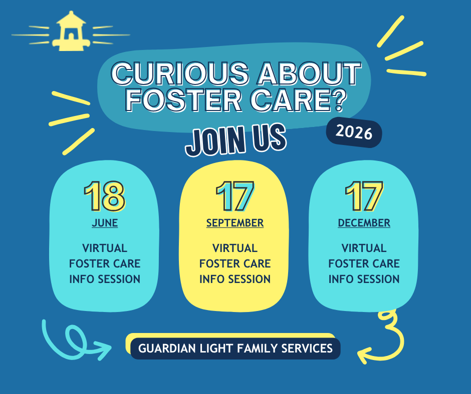

Questions and answers
Frequently asked questions.
Choose a topic below, then click the + next to a question to open the answer.

Foster Parenting
Click the + next to a question to open the answer.
Who do I contact if having challenges with my foster child?
Contact your assigned GLFS Foster Care Specialist.
What if my foster child is not a good fit?
Sometimes it takes time for a child/youth to adjust to a new home. They have lost everything in their lives, and it is a scary time when entering foster care. When children are scared or uncomfortable, they usually do not verbalize it but rather act out by having tantrums, talking back, not listening, etc.
We ask that you be patient and reach out to your GLFS Foster Care Specialist and/or the DHHS case manager for help. If the child truly cannot adjust to your home, you are able to give a 14-day notice. This gives GLFS and the case worker 14 days to find the child a new home. There are times when an immediate removal from your home may be necessary due to safety reasons, but this does not occur often.
What does special needs mean for a foster child?
When a child has "special needs" this could mean several things such as the child has ADHD, uses a wheelchair, has mental health issues, has tantrums, or has attachment issues. These characteristics are disclosed prior to placement when known.
Can I adopt my foster child?
DHHS's goal is almost always reunification with the child's biological parents/caregivers; however, there are times that this is not possible and parental rights are terminated. Once termination occurs, the child is then free for adoption.
What if I had my own children removed years ago?
To be a foster parent, you cannot be on the Child Abuse and Neglect Central Registry.
Can a same-sex couple be foster parents?
Yes, same-sex couples can be foster parents.
Can a single parent be a foster parent?
Yes, a single individual can be a foster parent.
How many foster children can I have at one time?
The number of foster children one can have depends on the size of one's home. DHHS does allow exceptions for siblings to not be split.
Does the child need their own room?
Each bedroom occupied by a foster child shall have a minimum floor space of 40 square feet per child. Each foster child shall be provided with a separate bed.
Do I get paid to be a foster parent?
Yes. A monthly subsidy based on the age and characteristics of the child is paid to GLFS to then be passed on to you.
Income requirements for foster care
One must be able to be financially stable enough to support the child. While the state does provide a subsidy to help support the child in your home, it sometimes can take 30 days for the first payment to go through. A budget is completed with you as part of your home study to examine your financial situation.
Do I need to put the child on my insurance?
You are not required to put the foster child on your insurance as the child receives Medicaid through the State of Nebraska.
Do I have to transport the child?
It is the foster parent's responsibility to transport the child to school, extracurricular activities, medical appointments, etc. Some special appointments that are over 100 miles one way are reimbursed by DHHS after the first 100 miles.
Do I have to talk to the child's parents?
It is encouraged that foster parents reach out to the child's biological parents/caregivers to help support the foster child and to learn more about the child. Your Foster Care Specialist can assist you with how to reach out to them and what to say.
Do I get to pick the type of child I will foster?
Every person who becomes a foster parent fills out a characteristic checklist regarding children/youth one feels comfortable providing care for, to include: gender, age ranges, medical diagnosis, and mental health diagnosis.
Minimum age to become a foster parent
To become a foster parent you must be 21 years old.
How many children are in foster care?
On any given day, there are nearly 443,000 children in foster care in the United States. In Nebraska there are 6,231 children in foster care; 913 of these children are waiting for adoptive families.
Can I talk to another foster parent first?
Absolutely! You may talk to one of our Agency Supported Foster Homes that our staff support. We would be happy to put you in contact with someone who can answer your questions, so you can make a confident decision for you and your family. Contact us to request a personal phone call.
Ongoing training for licensed foster homes
Licensed Foster Homes need 12 hours of continuing education each year per Nebraska state standards. GLFS is prepared to simplify the process by offering several options that meet your style of learning and time commitment.
Initial training to become a foster parent
There is a 21-hour training requirement to become a licensed foster parent in Nebraska. GLFS offers in-house training that can be completed in a group setting or in an individual setting within the comfort of your own home.
Note: The training is free.
Difference between Foster Parent and Respite Provider
Foster Parent: As a foster parent you agree to surround the child with a safe, healthy living environment, meet the child's basic needs, and treat the child as one of your own family members. Many times, the child has been removed from his/her parents or caregivers by the State of Nebraska due to issues surrounding abuse and neglect.
Respite Provider: Welcoming a child(ren) into their family and home for a short-term stay from 3 hours up to 2 weeks. This may be due to a parent needing someone to watch his/her child while the parent goes to a job interview, or it may be due to some discord in the child's home, and everyone needs a break from one another.
Note: Both programs require everyone living in your home 13 years and over to complete a full criminal background check, a reference check, a home study, and training with a staff member from Guardian Light Family Services.
Steps to becoming a licensed foster parent
1. Call GLFS to discuss your reasons for wanting to pursue fostering/respite.
2. Complete/pass a background check and fingerprinting.
3. Provide a minimum of three references who can attest to your character and ability to parent children.
4. Get a health physical using a form we will provide to you for the doctor.
5. Complete all mandatory pieces of training for licensure.
6. Allow GLFS staff to complete a walk-through of your home and complete a Home Study.
7. Complete all licensure paperwork with a GLFS staff member.
Family Support
Click the + next to a question to open the answer.
Does GLFS provide family support services statewide?
Yes. Guardian Light serves all 93 Nebraska counties from offices in Scottsbluff, Sidney, North Platte, Kearney, Lincoln, and Omaha. No matter where you are in Nebraska, from the Panhandle to the Missouri River, a Guardian Light family support worker can be assigned to your case.
How do families access GLFS family support services?
Family support services through Guardian Light are typically referred by DHHS or ordered by a court as part of a family's case plan. If you are a biological parent whose case plan includes Guardian Light services, your caseworker will coordinate the referral. If you are a referral source or judge, contact your nearest Guardian Light office directly to discuss service availability.
Can GLFS provide multiple services for the same family?
Yes. Guardian Light can coordinate multiple services for the same family under one agency. A family may receive supervised visitation, drug testing, and parenting classes simultaneously through GLFS, simplifying coordination for DHHS, judges, and the family itself.
What are Guardian Light's office and phone hours?
In-office support is available from 9:00 AM to 5:00 PM. Phone support is available 24/7 at (308) 870-7260.
Careers
Click the + next to a question to open the answer.
What does professional development look like at GLFS?
Guardian Light invests heavily in employee development. All staff receive paid onboarding training, and ongoing professional development is built into the role. Foster care and family support specialists complete regular continuing education, and the agency supports tuition reimbursement for those pursuing relevant degrees or certifications.
Does GLFS hire across all of Nebraska?
Yes. Guardian Light operates statewide with offices in Scottsbluff, Sidney, North Platte, Kearney, Lincoln, and Omaha, and serves all 93 Nebraska counties. We regularly have openings across the state, including rural areas. If you do not see a role near you, apply and note your preferred region.
Do I need a degree to work at GLFS?
Requirements vary by role. Therapist and skill builder positions typically require relevant degrees or licensure. Other roles, including family support workers and visitation supervisors, may have different requirements. Each job posting on our careers page lists the specific qualifications needed.
Family Preservation
Click the + next to a question to open the answer.
What is the role of a Skill Builder?
Skill Builders help families put therapeutic strategies into action. They provide coaching, modeling, encouragement, accountability, and hands-on support between therapy sessions. Skill Builders help families practice new skills, build healthy routines, strengthen communication, apply problem-solving strategies, and reinforce progress made in therapy. This additional support helps families create meaningful, lasting change and increases the likelihood that new skills will continue long after services end.
How often do families meet with their therapist?
Services are intensive and individualized based on the family's needs. Therapists work closely with families to establish goals, address barriers, and develop strategies for success.
What ages do you serve?
Family Preservation services are designed to support children, youth, and families experiencing challenges that may impact family stability and well-being.
Are services provided in the home?
Yes. Family Preservation services are primarily provided in the family's natural environment where challenges occur and change happens. In-home services allow families to learn and practice new skills in real time while receiving support in their everyday routines and interactions.
How long do Family Preservation services last?
Family Preservation is designed as an intensive, short-term service that helps families build safety, stability, and lasting change. The length of services varies based on each family's unique needs and goals.